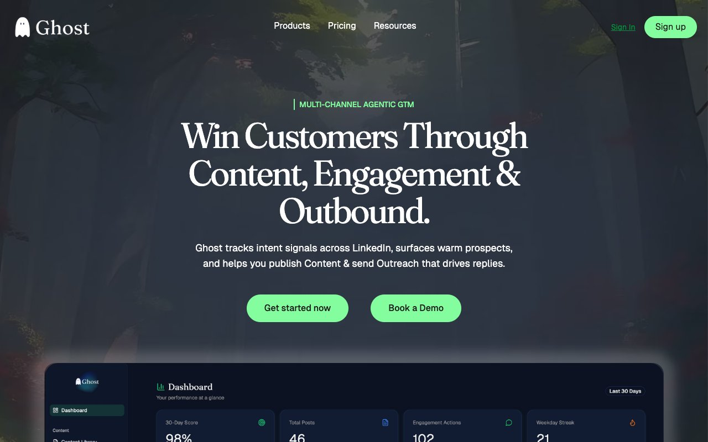

AI Product Build + GTM
GROW WITH GHOST
A multi-channel agentic GTM platform for LinkedIn automation
We designed, built and launched an end-to-end SaaS platform that tracks intent signals across LinkedIn, surfaces warm prospects, and powers content creation and outbound messaging with AI. The platform features an AI content composer with 5-dimensional scoring, strategic engagement monitoring, competitor intelligence, and automated LinkedIn + email outreach sequences.
Deliverables
Product Strategy
UX / UI Design
Full-Stack Development
AI Architecture
GTM Launch Strategy
Brand Identity
Visit Grow with Ghost ↗

Full
Product Build
End-to-End
Design → Launch
AI
Claude-Powered Stack
Multi
Channel Outreach